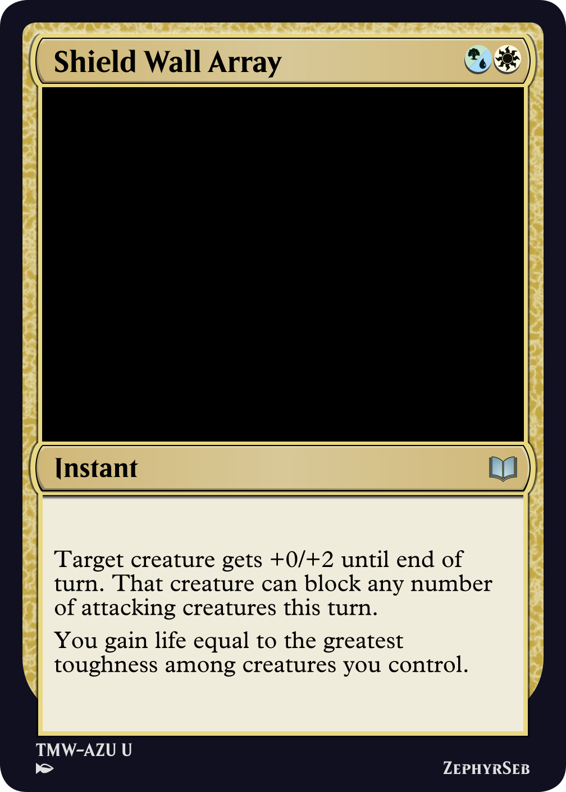
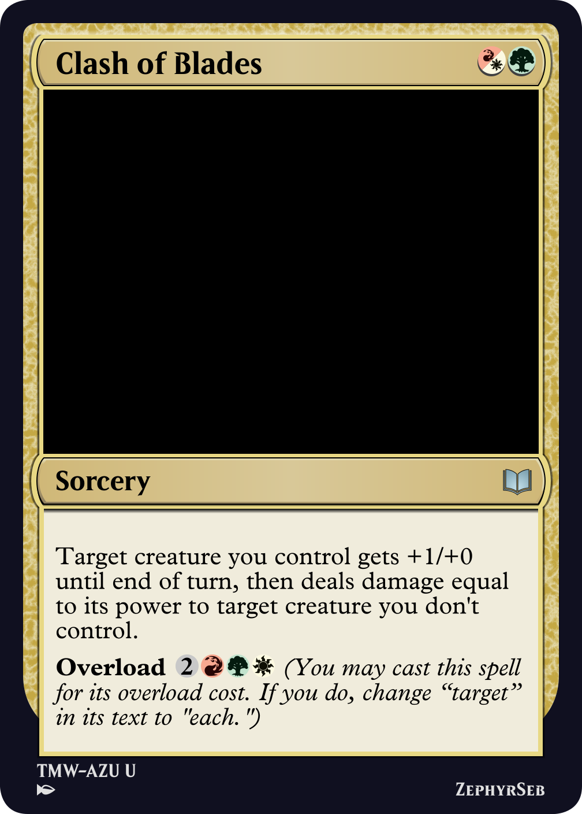
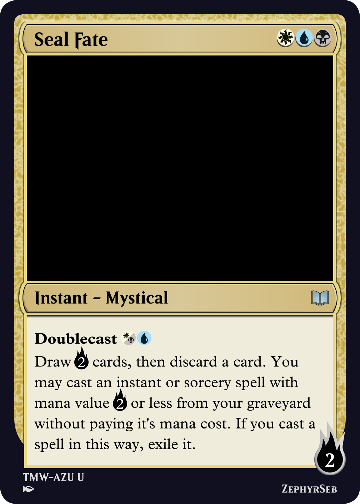
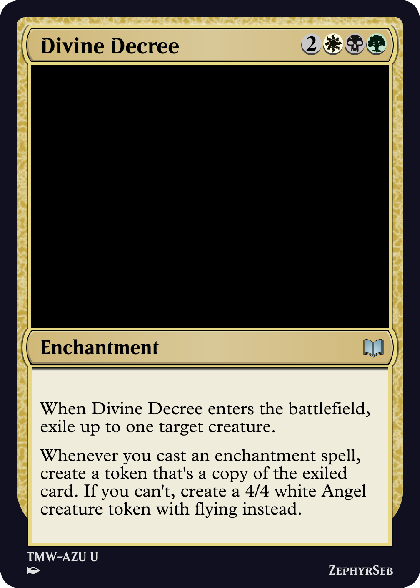
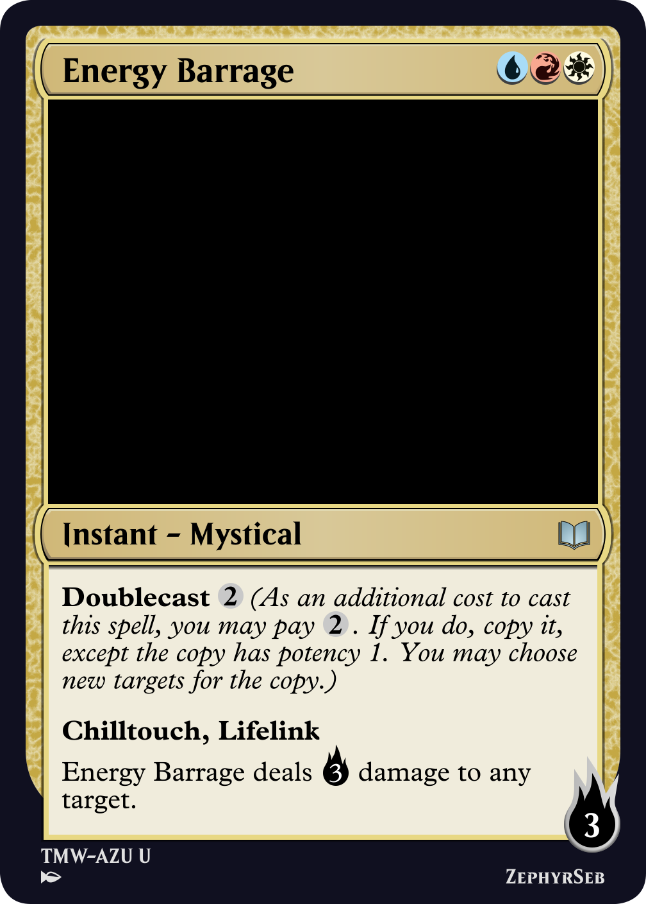
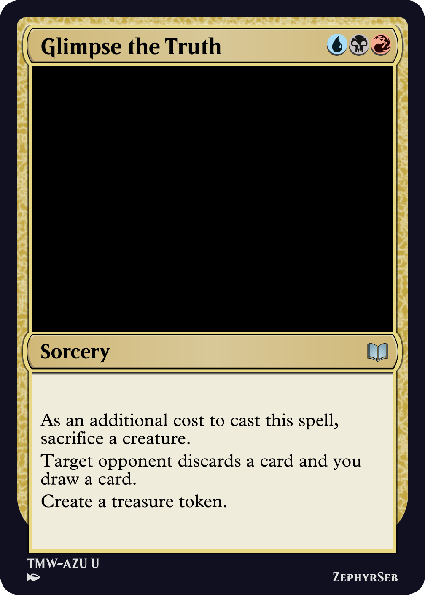
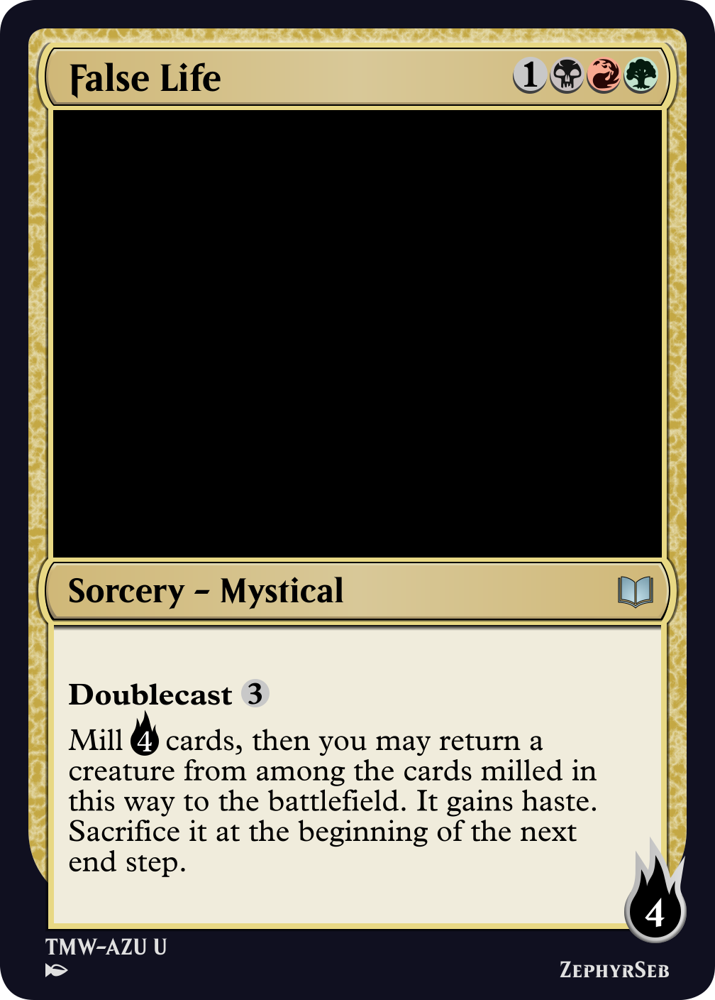
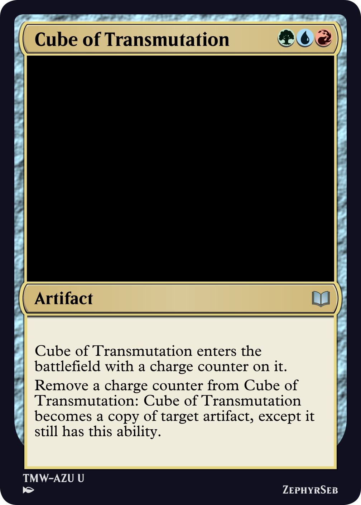

In the Many Worlds D&D campaign, the party visited an infinitely sprawling magical library, The Azure Archives. Magic in D&D is split into eight spell schools: abjuration, conjuration, divination, enchantment, evocation, illusion, necromancy, and transmutation. These spell schools acted as a central theme in the archives, shaping the puzzles and encounters found there.
Due to this, I set out to make these the central focus of the set, with each spell school akin to a faction. To do this, I tried to tie each spell school to a color identity, four using two-color identities, and four using three colors. The original draft ended up as follows:
| Abjuration | |
| Conjuration | |
| Divination | |
| Enchantment | |
| Evocation | |
| Illusion | |
| Necromancy | |
| Transmutation |
A notable problem with this approach was the colors used for transmutation entirely encompass the colors used for evocation. It turns out, with this combination of color identities, it wasn't possible to find an arrangement where this didn't happen. In addition, when it came to determining the mechanical identities of the spell schools, some of the color combinations just weren't landing. In the end, I decided to make every spell school three colors, and adjusted the colors a bit. Today I will talk about each of these spell schools and how they came to be.

Shield Wall Array
In D&D, abjuration magic is about healing, defense, and protection. The archetype was originally to be a lifegain archetype, however since blue doesn't usually do lifegain, the designs tended to be lopsided. Instead, while keeping the same colors, the mechanical focus was changed to defense, naturally encapsulated by the defender keyword. This led onto a toughness matters theme, where the archetype rewards high toughness creatures and turns them into a win condition.

Clash of Blades
Conjuration is all about creation, something which can be mechanically represented by the create keyword action, when the game tells you to create a token. This enabled a token-centric go wide archetype, something that performs best in these colors. This archetype never changed through design.

Seal Fate
The Azure Archives are suspended in time, which the set sought to represent using time counters, along with two keywords stasis and suspend. Stasis is a keyword that lets you keep your permanents tapped so they build up time counters, while suspend is a returning keyword that lets you exile a card for some number of turns to cast it for free later. Flavor-wise, neither felt very true to divination, and suspend was later pulled in favor of putting it in a later set. After the colors were redistributed, it was decided that divination wants access to blue, the color of knowledge - divination is all about knowledge and foresight (originally, blue, being the color of knowledge, wanted to fit into the most spell schools, so it had to be cut from some). In the end, divination is represented in the form of two different mechanics, both of which fit nicely into esper colors. The first involved scrying, looking at the future (i.e. the top of your deck) so you can plan, and potentially manipulate your luck. The second, foretell, represents the school's ability to use the tools it has at present to predict and prepare for the future. As a returning mechanic, it also has a very fitting name.

Divine Decree
In MTG, enchantment is one of the major card types, and so was a low hanging fruit for this school. However, the theme had originally been an aura control theme in red, white, and black, which turned out to be quite unfun and flat in testing. The school changed red to green, a color that has much more affinity for enchantments, and broadened its scope to be an enchantment-matters theme. Many of the cards in this school are either enchantments themselves, often very strong in MTG due to how difficult they are to remove, or cards that care about you playing lots of enchantments, offering card and mana advantage for doing so.

Energy Barrage
Blue and red are most commonly known as the spellslinging colors, something that encapsulates evocation magic very well. With magecraft in the set, the archetype was originally about creating scrolls to copy your instant and sorcery spells. While Wilds of Garrem was in its design phase, it became apparent it needed a mechanic that went on spells that could scale with the size of your creatures, and this inspired the creation of mystical spells. Soon after, doublecast was created, allowing for a way to create weaker copies of spells for magecraft without the overbearing power that scrolls were offering when they were needed to support an archetype. This allowed the set to scale the number of scrolls being created down, and when the schools were moved to three colors, white was added due to it commonly using the prowess keyword.

Glimpse the Truth
Illusion is a creature type in MTG that is commonly associated with creatures that die when they are targeted (or 'viewed'). It was decided to keyword this as illusory - negative keywords aren't very common in MTG, so often bring new design space. When the decision to expand the schools to three colors was made, red was added to illusion; red often looks to get a temporary resource advantage, so having a creature that has a very volatile existence seemed a perfect fit.

False Life
Inspired by witherbloom, necromancy was originally designed to be a 'life trade' archetype, essentially stealing your opponents life force to bolster your own. This, paired with abjuration's life gain, risked having games that stalled out too much as both player's life totals sky rocketed. Necromancy is all about graveyard magic, so the archetype was changed to care about the graveyard, filling it up, then getting things back out of it. Red was added as the third color since some red cards, particularly phoenixes, interact with the graveyard.

Cube of Transmutation
Transmutation was the hardest spell school to initially settle on a mechanical identity, since it represents change magic. In the end, it was decided to have a counters-matter theme, since the addition of counters to permanents can represent some kind of change. As the set made use of +1/+1, time, and charge counters, there were plenty of counters to play with. Once this was decided, the archetype never changed throughout design, however, particularly due to stasis and charge counters, the archetype has some strong artifact themes.
If I were to remake the set, I would keep each spell school as is, the flavor meets the mechanical identity and each spell school is fun to play, however I would remove time counters and the stasis mechanic - as well as adding complexity, it can easily lead to complicated game actions that don't progress the game. Also, it could have been a nice touch to add the spell schools as instant and sorcery subtypes, however this would have caused issues in the case of enchantment and illusion.
That's it from me, until next time, may you find your way through the library.
ZephyrSeb